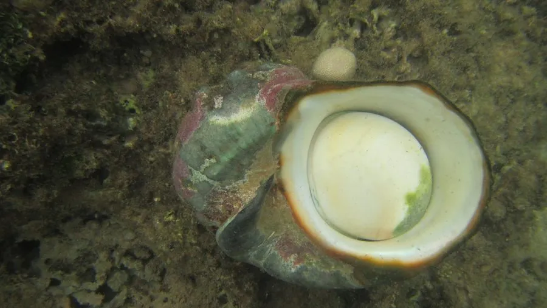

软体动物 · 动物界
夜光蝾螺 Turbo marmoratus

壳大如拳、壳面绿褐带大理石纹的蝾螺，壳口内银白珍珠层厚实，口盖厚重如猫眼，栖息于珊瑚礁浅海。
- 分类
- 门软体动物门纲腹足纲目原始腹足目科蝾螺科属蝾螺属
- 栖息环境
- 潮间带下区至水深二十米的珊瑚礁、岩礁和碎石底，白天藏在礁缝中
- 地理分布
- 印度洋至西太平洋热带珊瑚礁海区，包括中国南海、日本南部、菲律宾和澳大利亚北部
- 保护级别
- 尚无国际公约级别保护；长期采捕使局部种群下降，多国限制采捕
物种志
夜光蝾螺的贝壳大而厚重，壳高可达十五至二十厘米，壳形呈圆锥状，螺层膨大，壳面绿褐色至暗绿色，布满深浅交错的大理石状斑纹，有时缀有颗粒和棘突。壳口宽大，呈圆形，内面是厚实的银白色珍珠层，光滑如镜，在光下泛出柔和的虹彩，夜光之名由此而来。口盖厚重，外面凸起呈半球形，颜色墨绿，像一枚猫眼。
它分布于印度洋至西太平洋的热带珊瑚礁海区，包括中国南海、日本南部、菲律宾、印度尼西亚和澳大利亚北部，栖息在潮间带下区至水深二十米的珊瑚礁、岩礁和碎石底，白天躲在礁缝和洞穴中，夜间出来活动，以海藻为食。它是雌雄异体，繁殖期在春夏，受精卵发育成担轮幼虫后随水流漂游，再附着到礁石上变态。它的壳可加工成螺钿和工艺品，珍珠层是制作纽扣的传统材料，长期采捕使局部种群下降，目前尚无国际公约级别的保护，但多国已限制采捕。
形态与习性
- 壳高可达十五至二十厘米，厚重
- 壳面绿褐色，布满大理石状斑纹
- 壳口内面为厚实的银白色珍珠层
- 口盖厚重凸起如猫眼，墨绿色
- 栖息水层潮间带下区至水深二十米的礁区
- 食性夜间活动，以海藻为食
趣味知识
- 它的壳口内壁是一层厚珍珠层，打磨后能泛出柔和的虹彩。
- 那枚凸起的口盖像一颗墨绿的猫眼，是蝾螺科最典型的记号。
- 它白天躲在礁洞深处，夜里才爬出来啃食礁面上的藻类。